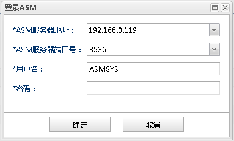
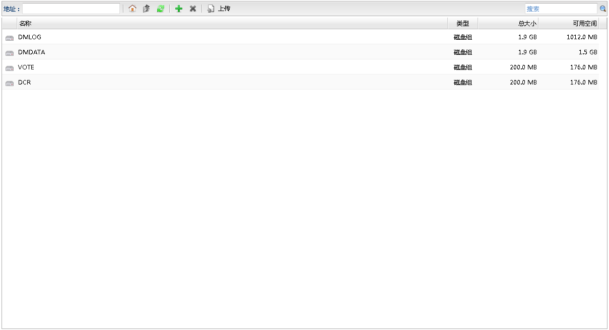
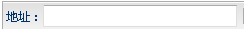

磁盘组
磁盘组 上级目录
上级目录 刷新
刷新 添加
添加 删除
删除从数据库监控面板中DMDSC集群的集群分组的操作下拉菜单中点击ASM文件管理,弹出登陆ASM文件系统的对话框,如下图所示：

输入ASM文件系统登陆信息，点击确定, 打开ASM文件系统管理面板，该页面用于浏览和管理ASM文件。界面显示如下图所示：

ASM文件系统管理的功能列表| 操作 | 说明 |
|---|---|
|  | 显示ASM文件的定位。 |
| 磁盘组 |
快速定位到磁盘组列表。 |
| 上级目录 |
快速定位到当前目录的上级目录。 |
| 刷新 |
刷新当前目录信息。 |
| 添加 |
创建磁盘组或ASM文件/目录。打开创建磁盘组对话框创建磁盘组,或者打开创建ASM文件/目录对话框创建ASM文件/目录 |
| 删除 |
删除选中的磁盘组或ASM文件/目录。打开刪除ASM对象对话框确认删除ASM对象。 |
| 上传 | 上传本地文件系统的文件到ASM文件系统的当前磁盘组或ASM目录。打开上传文件对话框上传文件到ASM文件系统。 |
| 操作 | 说明 |
|---|---|
 打开 打开 |
浏览选中的磁盘组或ASM目录。 |
 下载 下载 |
下载选中的磁盘组或ASM文件/目录到本地文件系统。 |
| 删除 |
删除选中的磁盘组或ASM文件/目录。打开刪除ASM对象对话框确认删除ASM对象。 |
 扩展 扩展 |
扩展磁盘组或ASM文件。打开扩展磁盘组对话框扩展磁盘组,或打开扩展ASM文件对话框扩展ASM文件。 |
 截断文件 截断文件 |
截断ASM文件。打开截断ASM文件对话框截断ASM文件。 |
 属性 属性 |
查看磁盘组或ASM文件/目录的详细信息。打开磁盘组属性对话框查看磁盘组属性信息，或者打开属性对话框查看磁盘文件/目录属性信息。 |
ASM文件系统磁盘组信息列表
| 字段 | 说明 |
|---|---|
| 名称 | ASM磁盘组名称 |
| 类型 | 类型为"磁盘组" |
| 总大小 | 磁盘组总空间大小 |
| 可用空间 | 磁盘组可用空间大小 |
ASM文件系统ASM文件/目录信息列表
| 字段 | 说明 |
|---|---|
| 名称 | ASM文件/目录名称 |
| 类型 | 类型为"目录"或者"文件" |
| 大小 | ASM文件大小 |
| 修改时间 | ASM文件/目录最近修改时间 |